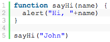
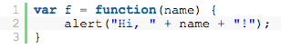
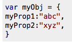
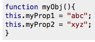

Background
Today was my first DBC challenge that focused on manipulating HTML tags using JavaScript. It was a rehash of Ruby Racer, but had an HTML view. But to understand that, let's go over some general concepts.
Complex CSS Selectors
CSS selectors identifies an HTML element based on its type(either class, id, or generality)
Child Selectors are decendents of a parent HTML element. The best example is a table with tablerows. Table rows would be the children of the parent table.(This is great because there is a JavaScript method .children that can be called on a parent HTML element(using method document.getElementById() to throw all child HTML into an array).
Other notable methods is document.createElement("")that will create HTML elements.
.appendChild("") allows you to add child HTML elements to a selected HTML parent.
Intro to Javascript Functions
Makeup
There are 3 main parts to a Javascript Function: the name, parameter, and the body.
Function Declaration/Expression
Function Declarations are nonanonymous. They are named functions that loook like:
.Notice that the name is not set in a variable. This allows for hoisting, the ability to call the function above where it was first placed. At DBC, the teachers opinionate that we shouldn't use Declarations because of this effect.
Function Expressions are anonymous functions. The functions are not named themselves, but are called by setting a variable to them. They do not have the hoisting effect and look like the image below:
First Class Objects/Callbacks
Functions are First-Class Objects in Javascript. This means that they have the same classification as primitives, which allows functions to be passed as parameters within other functions. If you call a function with a nested function, it will only return the nested function, not anything else. This goes into Closures.
Functional Scope/Closures
If we were to set variables within Functions, the variables will 'drip' down into w/e other nested functions that are within the parent function. If we were to set various variables in every function layer and set access the variables at the innermost function, we would only be able to call this function if we have the right number of parameters() as we call it.This is a Closure. This protected effect occurs because the return of each function layer aside from the closure will give the nested function, not anything else.
Constructors/Object Literals
Constructors and Object Literals are created when we want a pseudo-Class within JavaScript.
Object Literals look like this:
Constructors look like this:
